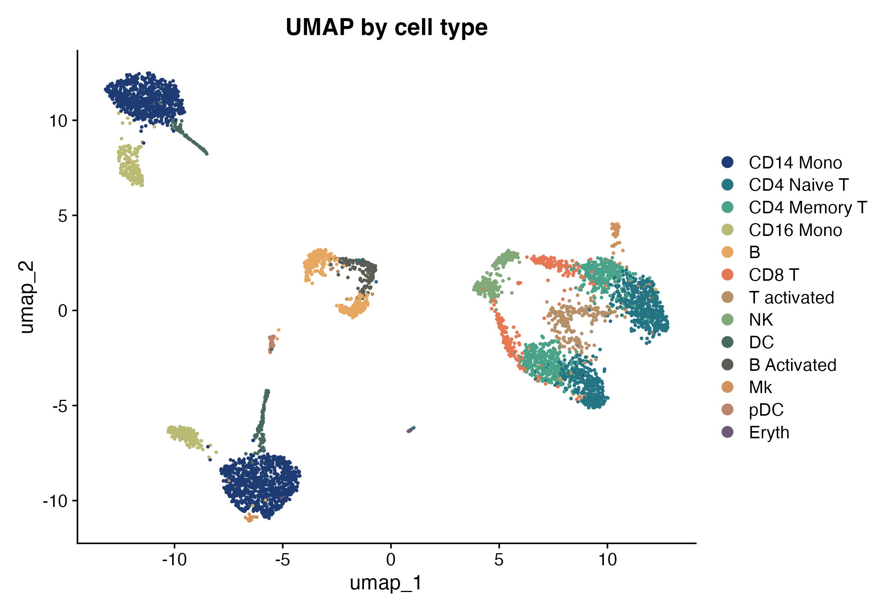
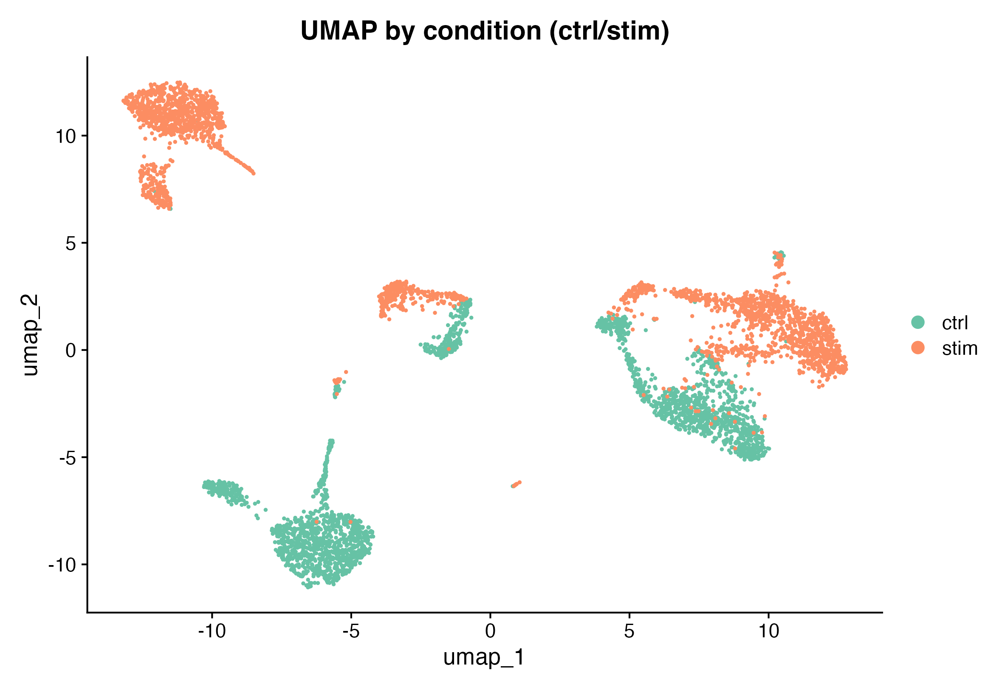
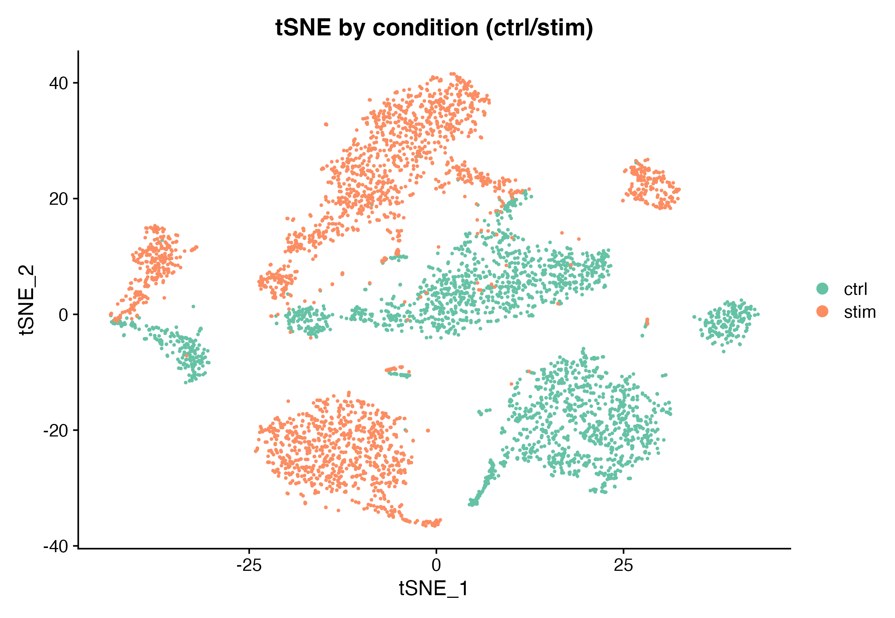
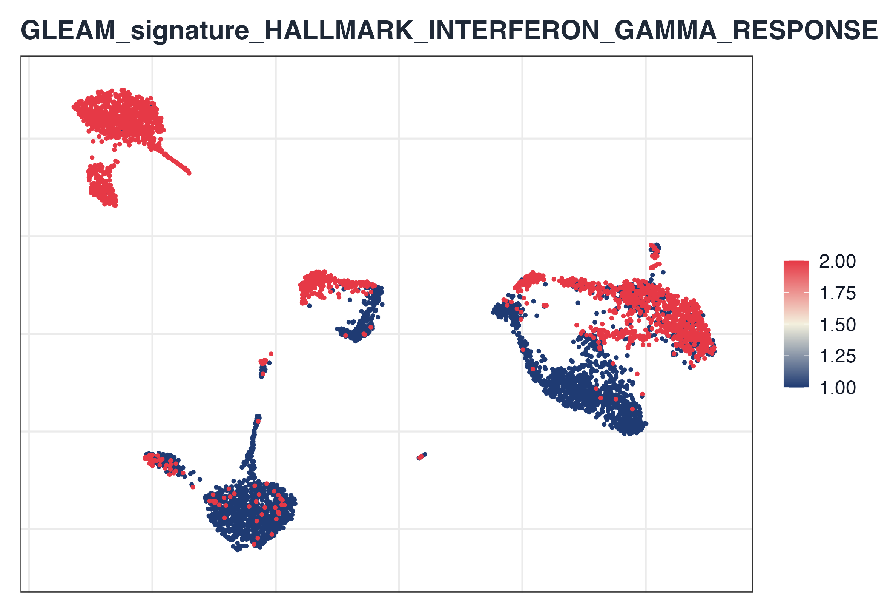
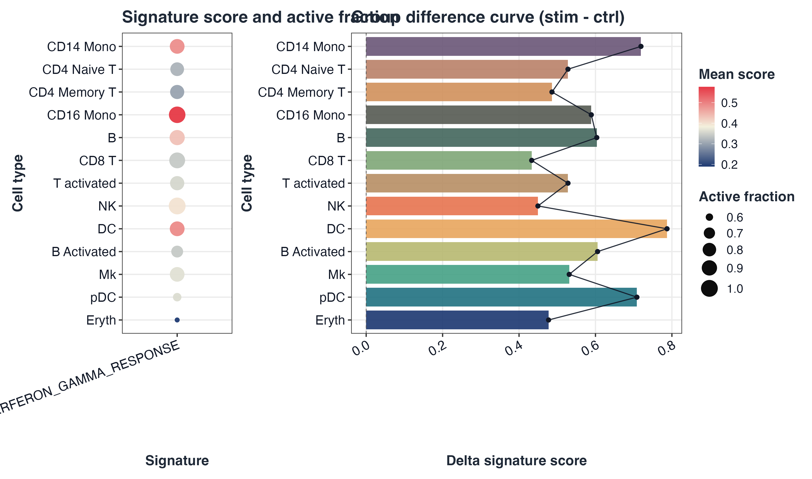
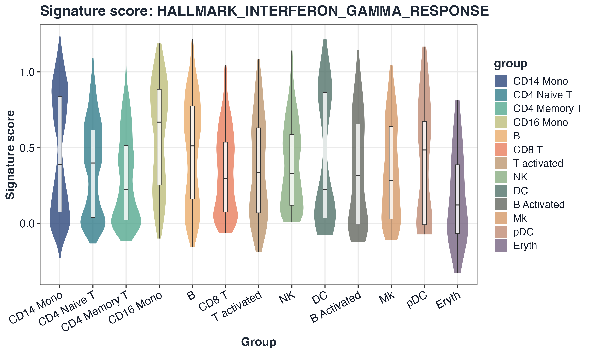
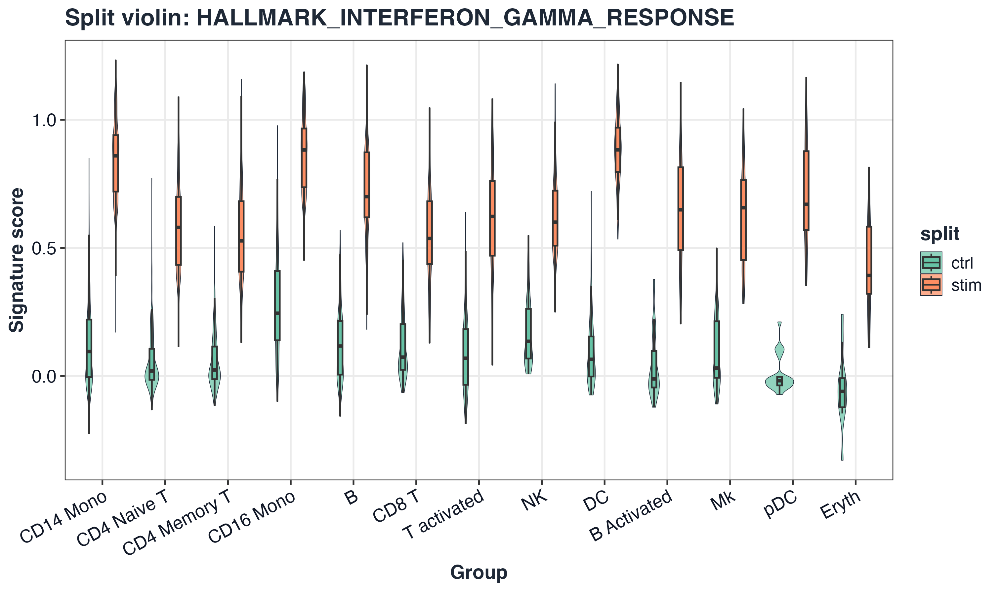
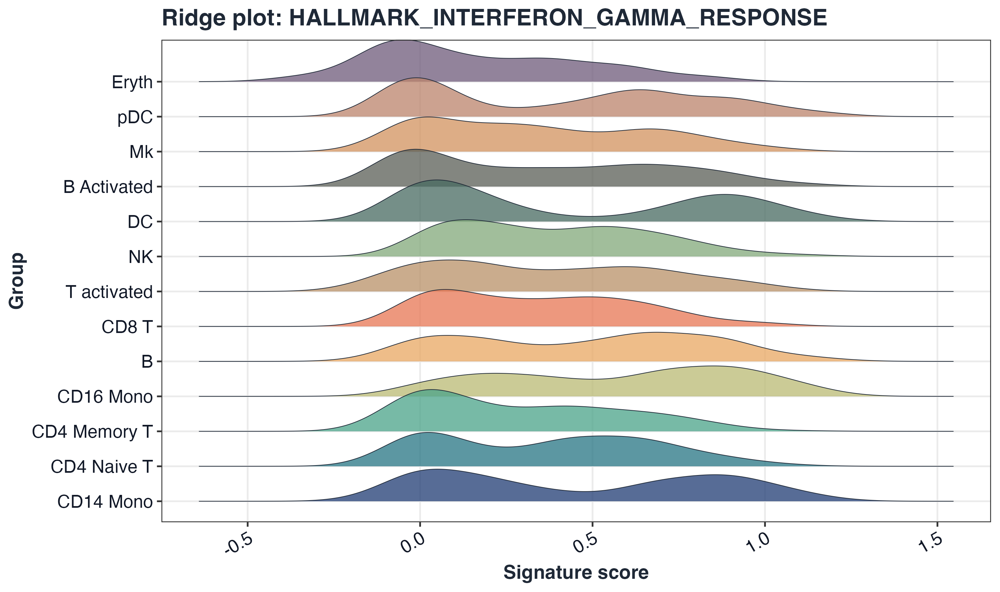
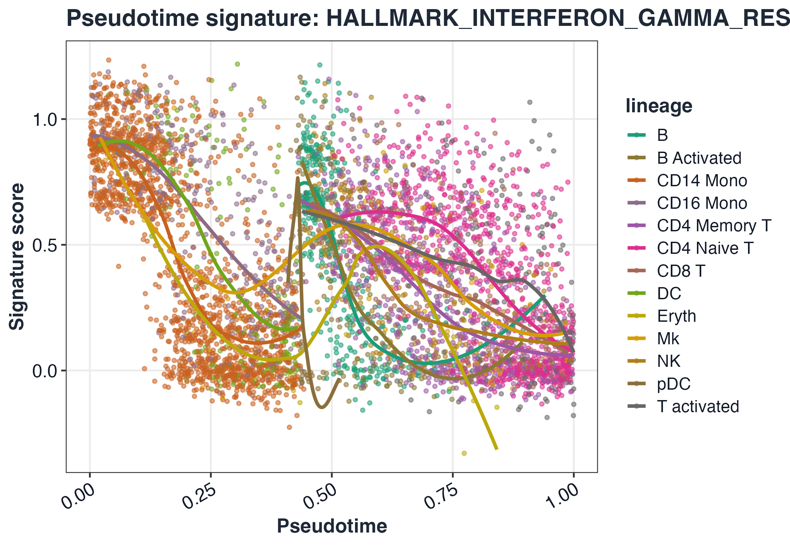
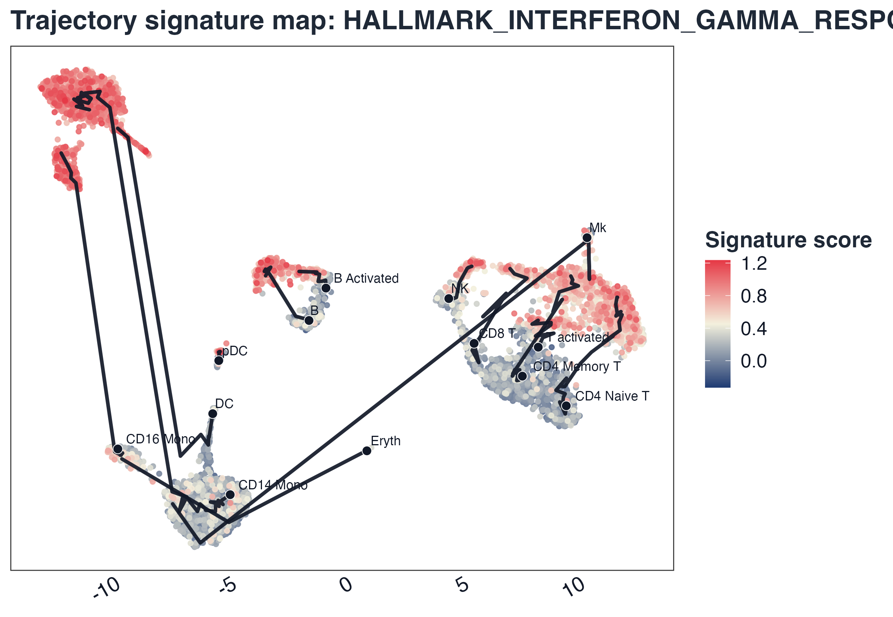

GLEAM full scRNA-seq workflow
Source:vignettes/GLEAM_full_scrna_workflow.Rmd
GLEAM_full_scrna_workflow.Rmd1) Load Seurat object
library(Seurat)
#> Warning: package 'Seurat' was built under R version 4.5.2
#> Loading required package: SeuratObject
#> Warning: package 'SeuratObject' was built under R version 4.5.2
#> Loading required package: sp
#> Warning: package 'sp' was built under R version 4.5.2
#>
#> Attaching package: 'SeuratObject'
#> The following object is masked from 'package:GLEAM':
#>
#> pbmc_small
#> The following objects are masked from 'package:base':
#>
#> intersect, t
ifnb_path <- system.file("extdata", "full_examples", "ifnb_seurat.rds", package = "GLEAM")
if (ifnb_path == "") ifnb_path <- file.path("inst", "extdata", "full_examples", "ifnb_seurat.rds")
seu <- readRDS(ifnb_path)
# Keep both CTRL/STIM groups in tutorial subset so group contrasts are always available.
if ("stim" %in% colnames(seu@meta.data)) {
grp <- as.character(seu$stim)
grp_levels <- unique(grp)
n_target <- min(5000L, ncol(seu))
n_each <- max(1L, floor(n_target / length(grp_levels)))
cells_use <- unlist(lapply(grp_levels, function(g) {
ids <- colnames(seu)[grp == g]
ids[seq_len(min(length(ids), n_each))]
}), use.names = FALSE)
if (length(cells_use) < n_target) {
rem <- setdiff(colnames(seu), cells_use)
cells_use <- c(cells_use, rem[seq_len(min(length(rem), n_target - length(cells_use)))])
}
} else {
cells_use <- colnames(seu)[seq_len(min(5000L, ncol(seu)))]
}
seu <- subset(seu, cells = cells_use)
dim(seu)
#> [1] 14053 5000
seu
#> An object of class Seurat
#> 14053 features across 5000 samples within 1 assay
#> Active assay: RNA (14053 features, 0 variable features)
#> 2 layers present: counts, data2) Set analysis columns and consistent palettes
seu$sample <- as.character(seu$orig.ident)
if ("stim" %in% colnames(seu@meta.data)) {
seu$group <- tolower(as.character(seu$stim))
} else {
seu$group <- as.character(seu$orig.ident)
}
seu$celltype <- as.character(seu$seurat_annotations)
celltype_levels <- names(sort(table(seu$celltype), decreasing = TRUE))
if (all(c("ctrl", "stim") %in% unique(seu$group))) {
group_levels <- c("ctrl", "stim")
} else {
group_levels <- unique(seu$group)
}
seu$celltype <- factor(seu$celltype, levels = celltype_levels)
seu$group <- factor(seu$group, levels = group_levels)
pal_celltype <- setNames(get_palette("gleam_discrete", n = length(celltype_levels), continuous = FALSE), celltype_levels)
pal_group <- setNames(get_palette("brewer_set2", n = length(group_levels), continuous = FALSE), group_levels)
table(seu$group)
#>
#> ctrl stim
#> 2500 2500
head(seu@meta.data[, c("sample", "group", "celltype")])
#> sample group celltype
#> AAACATACATTTCC.1 IMMUNE_CTRL ctrl CD14 Mono
#> AAACATACCAGAAA.1 IMMUNE_CTRL ctrl CD14 Mono
#> AAACATACCTCGCT.1 IMMUNE_CTRL ctrl CD14 Mono
#> AAACATACCTGGTA.1 IMMUNE_CTRL ctrl pDC
#> AAACATACGATGAA.1 IMMUNE_CTRL ctrl CD4 Memory T
#> AAACATACGGCATT.1 IMMUNE_CTRL ctrl CD14 Mono3) Standard Seurat preprocessing
seu <- NormalizeData(seu, verbose = FALSE)
seu <- FindVariableFeatures(seu, verbose = FALSE)
seu <- ScaleData(seu, verbose = FALSE)
seu <- RunPCA(seu, verbose = FALSE)
seu <- FindNeighbors(seu, dims = 1:20, verbose = FALSE)
#> Warning: package 'future' was built under R version 4.5.2
seu <- FindClusters(seu, resolution = 0.5, verbose = FALSE)
seu <- RunUMAP(seu, dims = 1:20, verbose = FALSE)
#> Warning: The default method for RunUMAP has changed from calling Python UMAP via reticulate to the R-native UWOT using the cosine metric
#> To use Python UMAP via reticulate, set umap.method to 'umap-learn' and metric to 'correlation'
#> This message will be shown once per session
seu <- RunTSNE(seu, dims = 1:20, verbose = FALSE)
ElbowPlot(seu, ndims = 30)4) UMAP and tSNE overview
DimPlot(seu, reduction = "umap", group.by = "celltype", cols = pal_celltype, pt.size = 0.35) +
ggplot2::labs(title = "UMAP by cell type")
DimPlot(seu, reduction = "umap", group.by = "group", cols = pal_group, pt.size = 0.35) +
ggplot2::labs(title = "UMAP by condition (ctrl/stim)")
DimPlot(seu, reduction = "tsne", group.by = "group", cols = pal_group, pt.size = 0.35) +
ggplot2::labs(title = "tSNE by condition (ctrl/stim)")
5) Signature scoring
gs <- get_geneset("hallmark", source = "builtin", species = "human")
sc <- score_signature(
object = seu,
geneset = gs,
geneset_source = "list",
seurat = TRUE,
assay = "RNA",
layer = "data",
slot = "data",
method = "ensemble",
min_genes = 3,
verbose = FALSE
)
sc$meta$celltype <- factor(as.character(sc$meta$celltype), levels = celltype_levels)
sc$meta$group <- factor(as.character(sc$meta$group), levels = group_levels)
dim(sc$score)
#> [1] 5 50006) Differential analysis
res_pb <- test_signature(
sc,
group = "group",
sample = "sample",
celltype = "celltype",
level = "pseudobulk",
method = "wilcox"
)
top_sig <- res_pb$table$pathway[order(res_pb$table$p_adj)][1]
head(res_pb$table)
#> pathway comparison_type group1 group2
#> 1 HALLMARK_APOPTOSIS pseudobulk ctrl stim
#> 2 HALLMARK_IL6_JAK_STAT3_SIGNALING pseudobulk ctrl stim
#> 3 HALLMARK_INFLAMMATORY_RESPONSE pseudobulk ctrl stim
#> 4 HALLMARK_INTERFERON_GAMMA_RESPONSE pseudobulk ctrl stim
#> 5 HALLMARK_OXIDATIVE_PHOSPHORYLATION pseudobulk ctrl stim
#> celltype
#> 1 B;B Activated;CD14 Mono;CD16 Mono;CD4 Memory T;CD4 Naive T;CD8 T;DC;Eryth;Mk;NK;pDC;T activated
#> 2 B;B Activated;CD14 Mono;CD16 Mono;CD4 Memory T;CD4 Naive T;CD8 T;DC;Eryth;Mk;NK;pDC;T activated
#> 3 B;B Activated;CD14 Mono;CD16 Mono;CD4 Memory T;CD4 Naive T;CD8 T;DC;Eryth;Mk;NK;pDC;T activated
#> 4 B;B Activated;CD14 Mono;CD16 Mono;CD4 Memory T;CD4 Naive T;CD8 T;DC;Eryth;Mk;NK;pDC;T activated
#> 5 B;B Activated;CD14 Mono;CD16 Mono;CD4 Memory T;CD4 Naive T;CD8 T;DC;Eryth;Mk;NK;pDC;T activated
#> level effect_size median_group1 median_group2 diff_median p_value
#> 1 pseudobulk -0.032884879 0.14843127 0.1813161 -0.032884879 4.483009e-01
#> 2 pseudobulk -0.050513451 0.19865376 0.2491672 -0.050513451 6.075034e-03
#> 3 pseudobulk -0.003719168 0.11660683 0.1203260 -0.003719168 4.793229e-01
#> 4 pseudobulk -0.534591542 0.09628314 0.6308747 -0.534591542 1.922966e-07
#> 5 pseudobulk 0.025092576 0.33501887 0.3099263 0.025092576 7.226122e-02
#> p_adj n_group1 n_group2 mean_group1 mean_group2 direction
#> 1 4.793229e-01 13 13 0.21701497 0.2228588 down
#> 2 1.518759e-02 13 13 0.20381390 0.2522351 down
#> 3 4.793229e-01 13 13 0.16010177 0.1737140 down
#> 4 9.614830e-07 13 13 0.09485593 0.6676259 down
#> 5 1.204354e-01 13 13 0.36315958 0.3009684 up
top_sig
#> [1] "HALLMARK_INTERFERON_GAMMA_RESPONSE"7) GLEAM embedding score plot (Seurat-based)
plot_embedding_score(
sc,
signature = top_sig,
object = seu,
reduction = "umap",
point_size = 0.7,
palette = "gleam_continuous"
)
8) Dot-bar plot
plot_dot_bar(
sc,
by = c("group", "celltype"),
signature = top_sig,
color_palette = "gleam_continuous"
)
9) Violin plot
plot_violin(
sc,
signature = top_sig,
group = "celltype",
palette = pal_celltype,
point_size = 0,
alpha = 0.75
) + ggplot2::theme(axis.text.x = ggplot2::element_text(angle = 28, hjust = 1))
10) Split violin plot
plot_split_violin(
sc,
signature = top_sig,
x = "celltype",
split.by = "group",
palette = pal_group,
alpha = 0.72
) + ggplot2::theme(axis.text.x = ggplot2::element_text(angle = 28, hjust = 1))
11) Ridge plot
plot_ridge(
sc,
signature = top_sig,
group = "celltype",
palette = pal_celltype,
alpha = 0.75
)
#> Picking joint bandwidth of 0.104
12) Trajectory-style plots
seu$pseudotime <- rank(Embeddings(seu, "pca")[, 1], ties.method = "average") / ncol(seu)
seu$lineage <- as.character(seu$celltype)
sc2 <- score_signature(
object = seu,
geneset = gs,
geneset_source = "list",
seurat = TRUE,
assay = "RNA",
layer = "data",
slot = "data",
method = "ensemble",
min_genes = 3,
verbose = FALSE
)
lineage_levels <- unique(as.character(sc2$meta$lineage))
pal_lineage <- setNames(get_palette("brewer_dark2", n = length(lineage_levels), continuous = FALSE), lineage_levels)
plot_pseudotime_score(
sc2,
signature = top_sig,
pseudotime = "pseudotime",
lineage = "lineage",
palette = pal_lineage
)
plot_trajectory_score(
sc2,
signature = top_sig,
object = seu,
reduction = "umap",
palette = "gleam_continuous"
)